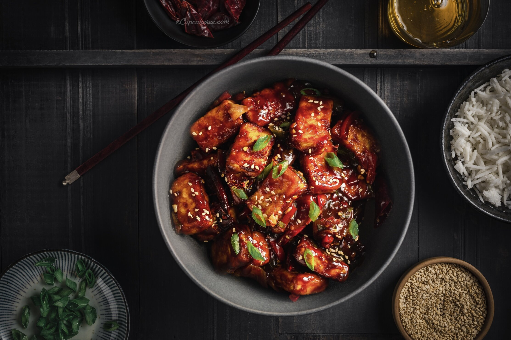

Taste just as good as it sounds: Chilli Panner

| Prep time |
Cooking time |
Total time |
| 15 mins |
15 mins |
30 mins |
Ingredients:
- 2 cups cubed paneer (Indian cheese curd).
- ¼ cup cornstarch, or as needed.
- ¼ cup vegetable oil.
- 4 cloves garlic, minced.
- 1 (1 inch) piece fresh ginger, grated.
- 1 onion, chopped.
- 4 green chile peppers, halved.
- 1 bell pepper, diced.
For the gravy:
- 2 tablespoons soy sauce.
- 2 tablespoons chile sauce.
- 2 tablespoons tomato sauce.
- 1 teaspoon white sugar.
- ½ teaspoon salt, or to taste.
- 2 tablespoons water, or as needed (Optional).
- ¼ cup chopped fresh cilantro, or to taste.
- 2 green onions, chopped (Optional).
Directions:
- Place paneer in a bowl and add enough cornstarch to coat; mix well.
- Heat oil large skillet over medium heat; fry paneer until golden brown, 1 to 2 minutes per side. Transfer paneer to a paper towel-lined plate, reserving oil in the skillet.
- Combine garlic and ginger in the hot oil; add onion, green chile peppers, and bell pepper. Cook and stir until vegetables are golden brown, about 5 minutes.
- Mix soy sauce, chile sauce, tomato sauce, sugar, salt, and remaining cornstarch into onion mixture, stirring in water if mixture is too thick. Add paneer; cook and stir until gravy is thickened, 2 to 3 minutes. Remove skillet from heat and garnish chili with cilantro and green onions.
Nutrition facts:
| Calories |
Fat |
Carbs |
Protein |
| 302 |
9g |
35g |
23g |
Return to the top
Return to home